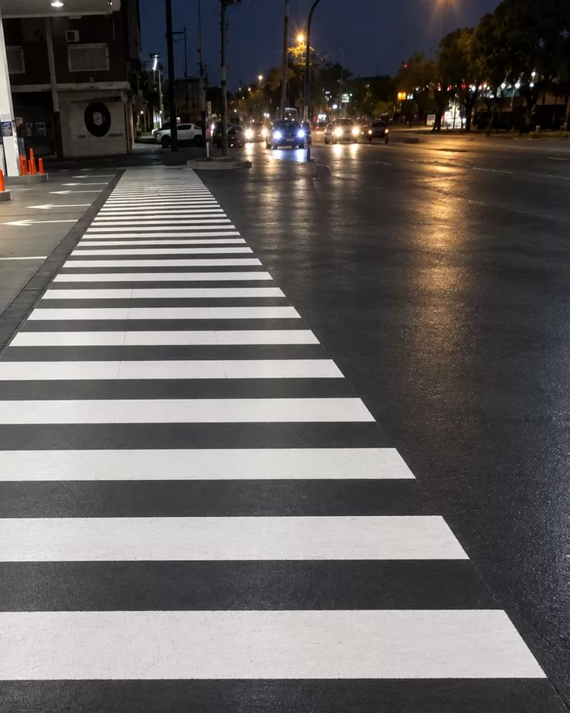
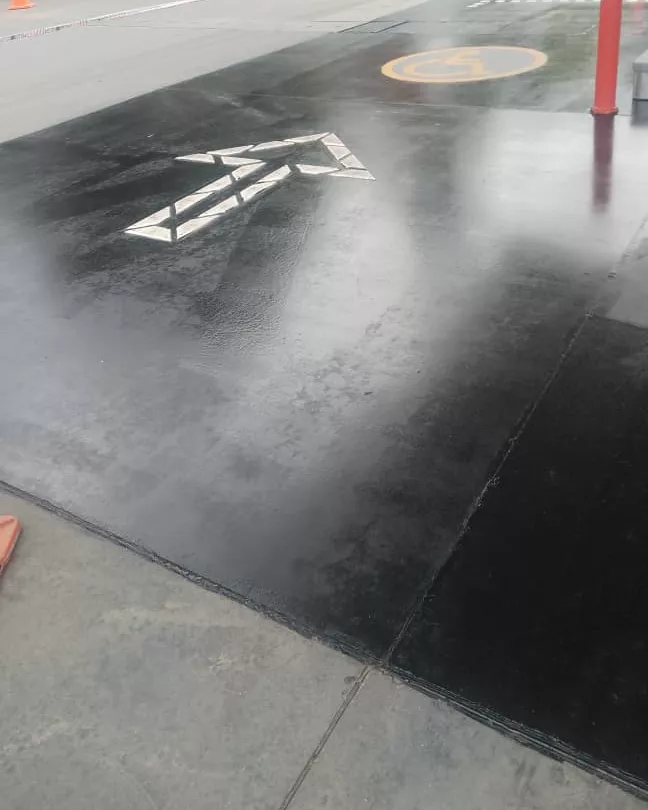
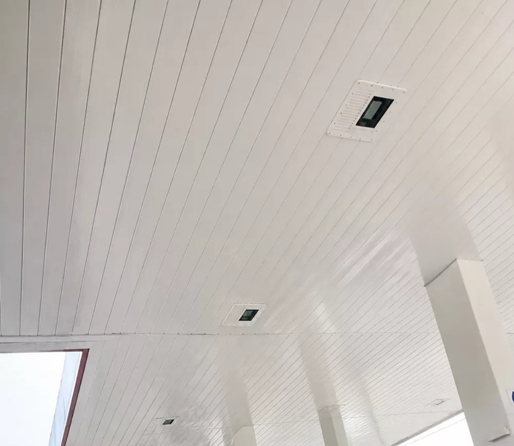
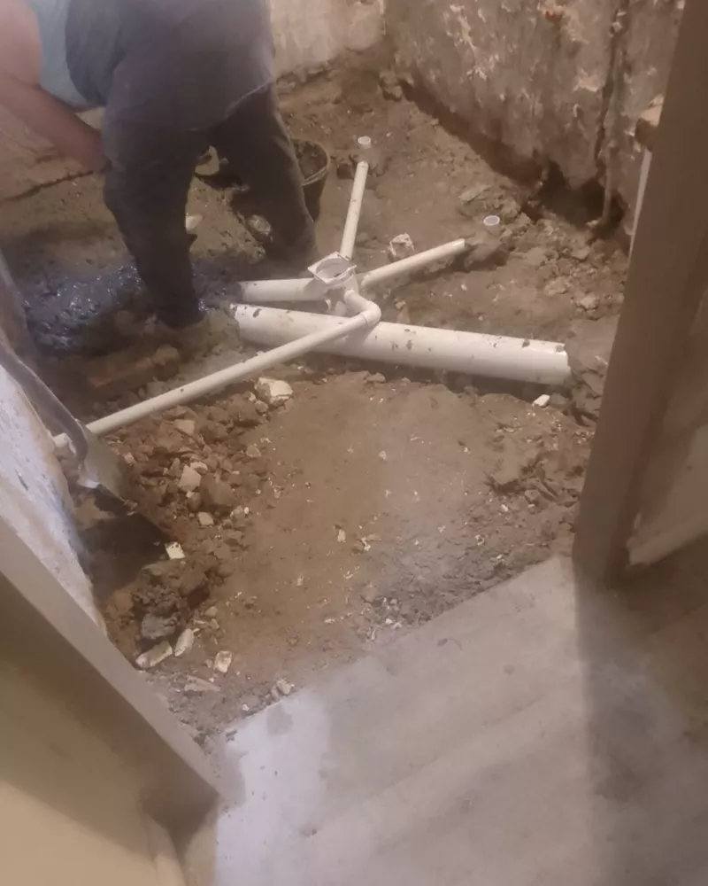
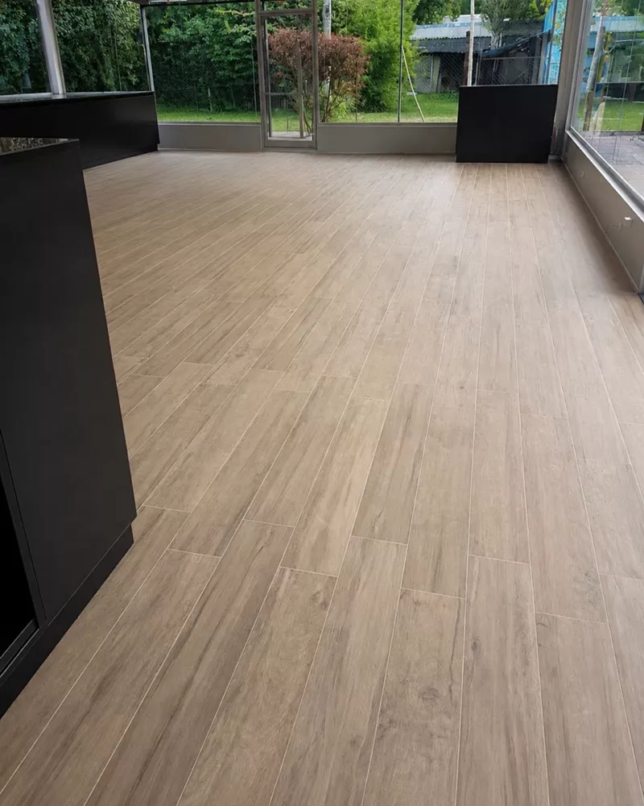
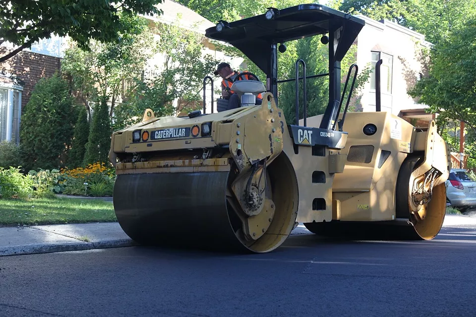
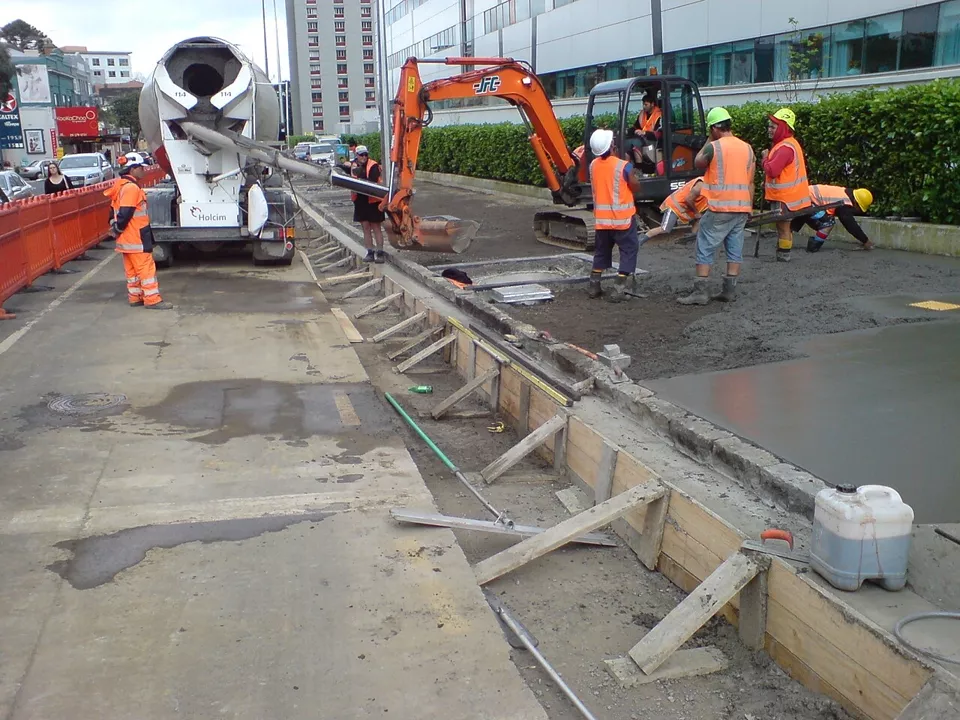

Obras civiles y viales — Zona sur GBA
Obras civiles y viales en zona sur.
Demarcación vial, pavimentos, pisos e instalaciones, con obras hechas en estaciones de servicio. Trabajamos en la zona sur del Gran Buenos Aires.
Fotos y video de obras de CI Construcciones
Obras nuestras, no de catálogo.
Estas fotos y este video son de trabajos de CI Construcciones: demarcación, pavimento, pisos e instalaciones, varios en estaciones de servicio.





Qué hacemos
Dos frentes de trabajo, la calle y la obra. Si lo que necesitás no está en la lista, consultanos igual.
Obras viales
- Demarcación vialSendas peatonales, flechas de circulación, sectores y señalización horizontal.
- PavimentosCalzadas, accesos y playas de asfalto u hormigón.
- Bacheo y reparaciónArreglo de calzadas y pisos dañados.
- Cordón cuneta y veredasCordones, cunetas y solados peatonales.
- Movimiento de suelosPreparación del terreno antes de pavimentar o construir.


Obras civiles
- Estaciones de servicioPlayas, pisos, demarcación e instalaciones.
- Pisos y soladosHormigón, contrapisos y revestimientos como porcelanato.
- Instalaciones sanitarias y pluvialesDesagües y cañerías, con zanjeo y cierre.
- Obras para comercios e industriasContanos tu proyecto y vemos cómo encararlo.
Armá tu pedido de obra y mandalo por WhatsApp.
Elegí qué necesitás, dónde es y una medida aproximada. Mientras completás, dibujamos tu obra en planta y te dejamos el mensaje listo para Carlos.
Del mensaje a la obra
- 01Nos contás la obra
Qué necesitás, dónde y una medida aproximada. El armador de arriba te deja el mensaje listo.
- 02Mandás fotos y ubicación
Con eso entendemos el estado del lugar y coordinamos lo que haga falta.
- 03Te pasamos el presupuesto
Con los trabajos, los plazos y cómo se organiza la obra.
- 04Manos a la obra
Arrancamos en la fecha acordada y te mantenemos al tanto por WhatsApp.
Trabajamos en la zona sur del Gran Buenos Aires
Hacemos obras civiles y viales en la zona sur del GBA. Contanos en qué localidad es tu obra y te confirmamos cómo lo encaramos.
Consultar por mi localidadPreguntas frecuentes
¿Cómo pido un presupuesto?
Escribinos por WhatsApp al 11 2784-8795 contando qué trabajo necesitás, dónde es la obra y una medida aproximada. Si podés, sumá fotos del lugar. También podés usar el armador de pedido.
¿En qué zona trabajan?
Trabajamos en la zona sur del Gran Buenos Aires. Contanos en qué localidad es la obra y te confirmamos.
¿Hacen obras en estaciones de servicio?
Sí. Hicimos obras en estaciones de servicio: pisos, demarcación e instalaciones. Contanos qué necesitás y si el lugar tiene que seguir abierto durante la obra.
¿Qué datos conviene mandar?
Tipo de trabajo, localidad, medida aproximada en metros cuadrados o lineales, si es obra nueva o reparación y para cuándo lo necesitás. Las fotos ayudan mucho.
¿Tenés una obra en zona sur?
Escribile a Carlos
11 2784-8795Por WhatsApp, con fotos y medidas de tu obra.